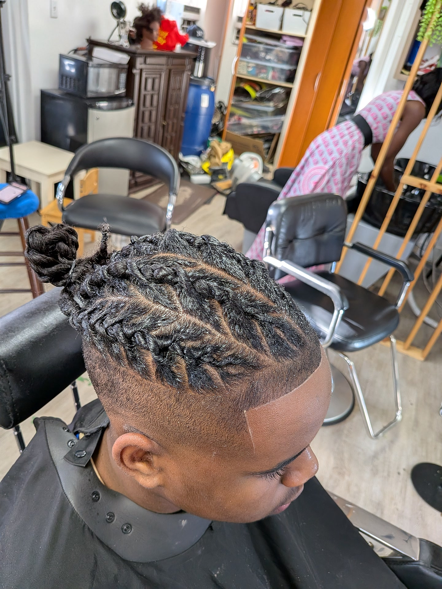
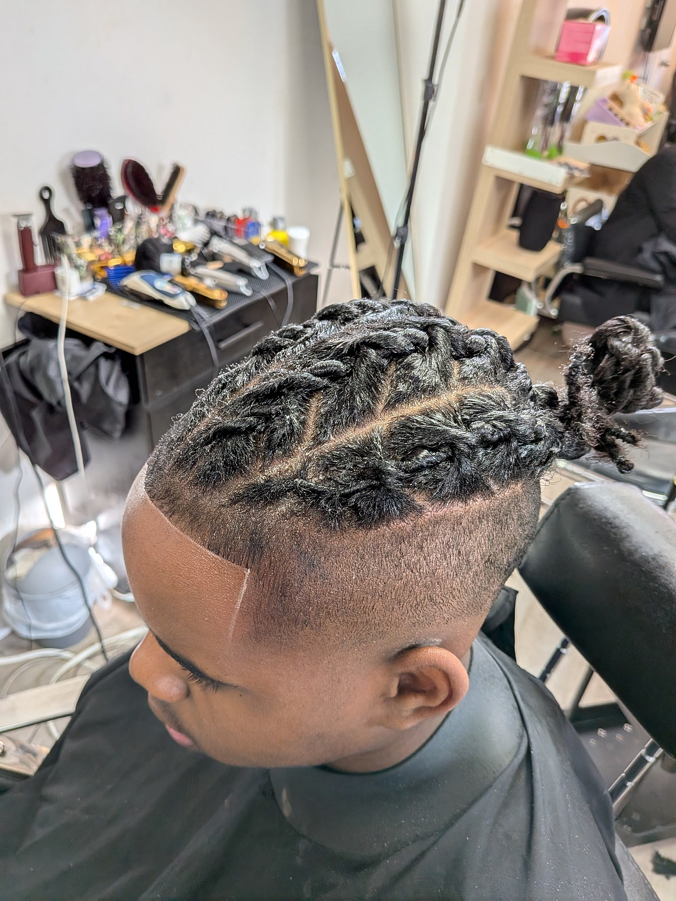

Kadio CoiffureAnatomie
Anatomie
d'un barrel twist
Le détail fait la différence.
Détail 01
Barrel twist · Kadio

Raies nettes
des séparations tracées à la règle
Détail 02
Barrel twist · Kadio

Torsades en relief
un volume qui tient
Détail 03
Barrel twist · Kadio
Chignon twisté
la touche finale
Détail 04
Barrel twist · Kadio

Contour au rasoir
une ligne parfaite
Détail 05
Barrel twist · Kadio

Dégradé net
une transition douce
Votre tourRéservez votre
Réservez votre
barrel twist.
615, Antoinette-Robidoux · Longueuil
514 919-5970
KADIOCOIFFURE.COM